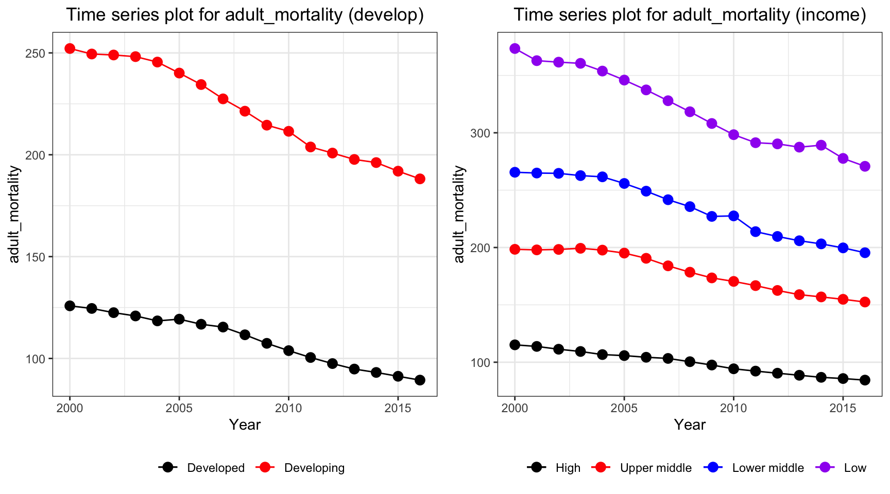

EDA
merged_data =
read_csv("data/Merged_expectation.csv", show_col_types = FALSE)
imputed_data = read_csv("data/Imputed_expectation.csv", show_col_types = FALSE)Time series plot
merged_data %>%
group_by(year, `Developed / Developing Countries`) %>%
summarize(
mean_val = mean(une_life)
) %>%
pivot_wider(
values_from = mean_val,
names_from = `Developed / Developing Countries`
) %>%
ggplot()+
geom_line(aes(x=year, y=Developed, color='a'))+
geom_line(aes(x=year, y=Developing, color='b'))+
scale_color_manual(name = ' ',
values =c("a"='black',"b"='red'),
labels = c('Developed','Developing'))+
geom_point(aes(x=year, y=Developed, color='a'),shape=19,size = 3)+
geom_point(aes(x=year, y=Developing, color='b'),color = "red", shape=19,size = 3)+
labs(title = sprintf("Time series plot for %s", "Life Expectancy") )+
xlab("Year")+
ylab(sprintf("%s","Life Expectancy"))
Time_series_plot = function(variable,merged_data){
merged_data %>%
group_by(year, `Developed / Developing Countries`) %>%
summarize_at(variable,mean,na.rm=TRUE) %>%
pivot_wider(
values_from = variable,
names_from = `Developed / Developing Countries`
) %>%
ggplot()+
geom_line(aes(x=year, y=Developed, color='a'))+
geom_line(aes(x=year, y=Developing, color='b'))+
scale_color_manual(name = ' ',
values =c("a"='black',"b"='red'),
labels = c('Developed','Developing'))+
geom_point(aes(x=year, y=Developed, color='a'),shape=19,size = 3)+
geom_point(aes(x=year, y=Developing, color='b'),color = "red", shape=19,size = 3)+
labs(title = sprintf("Time series plot for %s", variable) )+
xlab("Year")+
ylab(sprintf("%s",variable))
}
Time_series_plot("une_life",merged_data)
Time_series_plot("bmi",merged_data)
#Time_series_plot("bmi",imputed_data)
Time_series_plot("gni_capita",merged_data)## Warning: Removed 3 row(s) containing missing values (geom_path).
## Removed 3 row(s) containing missing values (geom_path).## Warning: Removed 3 rows containing missing values (geom_point).
## Removed 3 rows containing missing values (geom_point).
Correlation:
Pearson Correlation
Over the time:
Pearson_Correlation = function(varnum, merged_data){
correlation_result = tibble("date"=2000:2016, "Pearson_cor"=0,"Pearson_pval"=0)
for (t in 2000:2016){
merged_data_temp =
merged_data %>%
filter(year==t)
correlation_result$Pearson_cor[t-1999] =
cor(merged_data_temp[,varnum], merged_data_temp$une_life, method = "pearson",use = "complete.obs")[1]
correlation_result$Pearson_pval[t-1999] =
cor.test(merged_data_temp[,varnum][[1]], merged_data_temp$une_life, method = "pearson",use = "complete.obs")$p.value
}
return(correlation_result)
}
#Pearson_Correlation(6,merged_data)
Pearson_Correlation_result = tibble("date"=2000:2016)
colname = colnames(merged_data)
Pearson_Correlation_result %>%
mutate(une_exp = Pearson_Correlation(6,merged_data)$Pearson_cor,
une_exp_pval = Pearson_Correlation(6,merged_data)$Pearson_pval,
alcohol = Pearson_Correlation(11,merged_data)$Pearson_cor,
alcohol_pval = Pearson_Correlation(11,merged_data)$Pearson_pval
)## # A tibble: 17 × 5
## date une_exp une_exp_pval alcohol alcohol_pval
## <int> <dbl> <dbl> <dbl> <dbl>
## 1 2000 0.992 8.12e-163 0.392 0.0000000696
## 2 2001 0.995 7.98e-186 0.387 0.000000101
## 3 2002 0.996 2.62e-188 0.381 0.000000172
## 4 2003 0.995 1.68e-183 0.390 0.0000000781
## 5 2004 0.995 1.33e-181 0.398 0.0000000422
## 6 2005 0.995 4.62e-187 0.398 0.0000000331
## 7 2006 0.995 1.22e-179 0.396 0.0000000345
## 8 2007 0.994 5.51e-174 0.395 0.0000000383
## 9 2008 0.991 3.21e-162 0.403 0.0000000189
## 10 2009 0.992 2.80e-162 0.412 0.00000000849
## 11 2010 0.969 3.07e-112 0.401 0.0000000217
## 12 2011 0.991 1.42e-161 0.404 0.0000000157
## 13 2012 0.990 1.38e-155 0.417 0.00000000482
## 14 2013 0.989 2.73e-151 0.412 0.00000000761
## 15 2014 0.987 6.60e-145 0.411 0.00000000853
## 16 2015 0.989 8.73e-152 0.428 0.00000000175
## 17 2016 0.989 7.65e-152 0.431 0.00000000127Distance Correlation
Distance correlation is a novel developed technique to discover the joint dependence of random variables developed by Székely et al. Unlike Pearson correlation, such Pairwise distance correlation is a distance method and therefore it can take into consideration of the non-linear relationship between two random variables, namely \(X\in \mathbb{R}^p\) and \(Y\in \mathbb{R}^q\) that can have arbitrary dimensions (p and q can be non-equal) to some extend. The correlation between two variables is said to be independent of distance correlation \(\mathcal{R}(X,Y)=0\).
In my article, denote the scalar product of two vectors \(a\) and \(b\) as <\(a,b\)> and conjugate of complex function f as \(f\). Also define norm \(|x|_p\) as Euclidean norm for \(x\in\mathbb{R}^p\)
Definition 1
In weighted \(l_2\) space, the \(||\cdot||_w\)-norm for any complex function \(\zeta \in \mathbb{R}^p\times\mathbb{R}^q\) is defined by: \[ \begin{equation} ||\zeta( a, b )||^2 _w =\int_{\mathbb{R}^{p+q}}|\zeta( a, b)|^2 w( a, b)\,d a\, d b \end{equation} \] where \(w(a,b)\) can be any arbitrary positive weighting function as long as the integral is well-defined.
Definition 2
Define the measure of dependence as: \[ \begin{equation} V^2(X,Y;w) = ||f_{X,Y}(a,b)-f_X(a)f_Y(b)||^2_w= \int_{\mathbb{R}^{p+q}}|f_{X,Y}(a,b)-f_X(a)f_Y(b)|^2 w( a, b)\,d a\, d b \end{equation} \]
Proof
The criterion of independent means that for vectors \(a\), \(b\), the probability density function \(f_X(a)\), \(f_Y(b)\) and their joint probability density function \(f_{X,Y}(a,b)\) satisfies \(f_{X,Y}(a,b)=f_X(a)f_Y(b)\). Therefore, I have \(V^2(X,Y;w)=||0||^2_w=0\) if they are independent hence the equation satisfy the condition that \(V^2=0\) only if variables are independent.
The choice of weighting function must satisfy invariance under transformations of random variables up to multiplication of a positive constant \(\epsilon\): \((X,Y)\rightarrow (\epsilon X, \epsilon Y)\) and positiveness for any dependent variables. By the work of Szekely et. al., only non-integrable functions satisfy the condition for weight function. In order to specify the formula, I need the following lemma
Lemma 1
For all x in \(\mathbb{R}^d\): \[ \begin{equation} \int_{\mathbb{R}^d}\frac{1-cos<y,x> }{|y|^{d+1}_{d}}dy=c_d|x|=\frac{\pi ^{(1+d/2)}}{2 \Gamma ((d+1)/2)}|x| \end{equation} \] where \(\Gamma(\cdot)\) is the gamma function.
Now I can choose weight function as following: \[ \begin{equation} w(a,b) = (c_p c_q |a| ^{1+p}_p |b| ^{1+q}_q )^{-1} \end{equation} \]
By using such weight function and lemma 3.1, the definition of distance covariance will be well-defined. Note by the weight, I have \(dw = (c_p c_q |a| ^{1+p}_p |b| ^{1+q}_q )^{-1}dadb\). This is proven in the following definition. \
Deinition 4
Define the distance covariance (dCov) for random vectors \(X\) and \(Y\) with finite expectation as the following non-negative figure: \[ \begin{equation} V^2(X,Y) = ||f_{X,Y} (a,b)- f_X(a)f_Y (b)||^2 = \frac{1}{c_pc_q}\int_{\mathbb{R}^{p+q}}\frac{|f_{X,Y} (a,b) - f_X(a)f_Y (b)|^2}{|a|^{1+p}_p|b|^{1+q}_q}da db \end{equation} \] where \(a\in \mathbb{R}^p\), \(b\in \mathbb{R}^q\) are two vectors that \(a\in X\) and \(b\in Y\)
Here is my theorem.
Distance_Correlation = function(varnum, merged_data){
correlation_result = tibble("date"=2000:2016, "Distance_cor"=0,"Distance_pval"=0)
for (t in 2000:2016){
merged_data_temp =
merged_data %>%
filter(year==t) %>%
select(27,varnum) %>%
na.omit()
correlation_result$Distance_cor[t-1999] =
dcor(merged_data_temp[,2], merged_data_temp$une_life,)[1]
correlation_result$Distance_pval[t-1999] =
dcor.test(merged_data_temp[,2][[1]], merged_data_temp$une_life,R=1000)$p.value
}
return(correlation_result)
}
Distance_Correlation_result = tibble("date"=2000:2016)
colname = colnames(merged_data)
Distance_Correlation_result %>%
mutate(une_exp = Distance_Correlation(6,merged_data)$Distance_cor,
une_exp_pval = Distance_Correlation(6,merged_data)$Distance_pval,
alcohol = Distance_Correlation(11,merged_data)$Distance_cor,
alcohol_pval = Distance_Correlation(11,merged_data)$Distance_pval
)## # A tibble: 17 × 5
## date une_exp une_exp_pval alcohol alcohol_pval
## <int> <dbl> <dbl> <dbl> <dbl>
## 1 2000 0.992 0.000999 0.416 0.000999
## 2 2001 0.994 0.000999 0.413 0.000999
## 3 2002 0.995 0.000999 0.405 0.000999
## 4 2003 0.994 0.000999 0.413 0.000999
## 5 2004 0.993 0.000999 0.419 0.000999
## 6 2005 0.994 0.000999 0.420 0.000999
## 7 2006 0.993 0.000999 0.422 0.000999
## 8 2007 0.992 0.000999 0.418 0.000999
## 9 2008 0.990 0.000999 0.430 0.000999
## 10 2009 0.991 0.000999 0.440 0.000999
## 11 2010 0.989 0.000999 0.426 0.000999
## 12 2011 0.990 0.000999 0.432 0.000999
## 13 2012 0.987 0.000999 0.444 0.000999
## 14 2013 0.985 0.000999 0.441 0.000999
## 15 2014 0.983 0.000999 0.434 0.000999
## 16 2015 0.984 0.000999 0.452 0.000999
## 17 2016 0.984 0.000999 0.458 0.000999